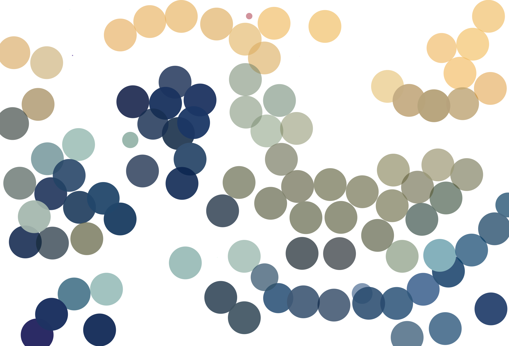

Diffvg 神奈川沖浪圓形參數實驗
實驗一、半徑參數
固定參數：圓形數量 500, 迭代回合數 100, 限制最大半徑 1 倍
| Ground Truth | 半徑大小: 10.0 | 半徑大小: 20.0 | 半徑大小: 25.0 | 半徑大小: 50.0 | 半徑大小: 100.0 | 半徑大小: 150.0 |
|---|---|---|---|---|---|---|
 |
||||||
| MSE | 0.1810 | 0.1615 | 0.1462 | 0.0562 | 0.0237 | 0.0227 |
| 時間(s) | 132.89 | 129.61 | 128.77 | 122.62 | 119.21 | 118.67 |
| 檔案大小(KB) | 64 | 64.1 | 64.3 | 64.8 | 69 | 70.5 |
實驗二、最大半徑參數
固定參數：圓形數量 500, 迭代回合數 100, 半徑 25.0
| Ground Truth | 最大半徑: 25.0 (x1) | 最大半徑: 50.0 (x2) | 最大半徑: 125.0 (x5) | 最大半徑: 無限制 |
|---|---|---|---|---|
|
||||
| MSE | 0.1469 | 0.0577 | 0.0239 | 0.0245 |
| 時間(s) | 125.58 | 125.00 | 122.88 | 122.31 |
| 檔案大小(KB) | 64.3 | 64.7 | 70.5 | 71 |
實驗三、圓形數量參數
固定參數：半徑 25.0, 限制最大半徑 2 倍 (50.0), 迭代回合數 100
| Ground Truth | 圓形數量: 100 | 圓形數量: 500 | 圓形數量: 1000 | 圓形數量: 1500 | 圓形數量: 2000 | 圓形數量: 2500 |
|---|---|---|---|---|---|---|
|
 | |||||
| MSE | 0.0856 | 0.0236 | 0.0176 | 0.0152 | 0.0137 | 0.0126 |
| 時間(s) | 114.29 | 121.69 | 142.53 | 167.53 | 195.22 | 218.55 |
| 檔案大小(KB) | 13.2 | 69.8 | 141 | 211 | 282 | 353 |